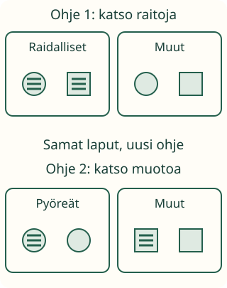

Aavan lajittelualusta

Aava siivoaa retkilaput. Tänään ohje on: raidalliset yhteen, muut toiseen.
Tavoite: laitan jokaisen esineen ryhmään annetun ohjeen mukaan.
Aava siivoaa retkilaput. Tänään ohje on: raidalliset yhteen, muut toiseen.
Tavoite: laitan jokaisen esineen ryhmään annetun ohjeen mukaan.
Ota raidallisia ja raidattomia paperilappuja. Tee kaksi paikkaa. Kysy jokaiselta lapulta: onko siinä raitoja? Jos on, laita se raidallisiin. Jos ei, laita se muihin.

Raidallinen pyöreä ja raidallinen kulmikas lappu kuuluvat nyt samaan ryhmään. Ohje kysyy raidoista. Siksi muodon ero ei haittaa.
Jos pyykkiohje on sukat yhteen, paidat menevät muualle. Sukan väri ei ratkaise. Katso aina annettua ohjetta. Älä vaihda sääntöä kesken.
Ennusta: raidaton pyöreä lappu on ensin muissa. Mihin se menee, jos uusi ohje on pyöreät yhteen?
Ohje: raidalliset yhteen, muut toiseen.
Kosketa ryhmää, johon vuorossa oleva lappu kuuluu. Voit palauttaa lapun ryhmästä ja siirtää uudestaan.
Vuorossa olevat laput näkyvät tässä, kun harjoitus käynnistyy.
Lajittele jokainen lappu.
Lue ohje aikuisen kanssa. Katso vain sen nimeämää ominaisuutta. Muut tarkoittaa tässä kaikkia lappuja, jotka eivät täytä samaa ehtoa.
Lajittele oikeat tavarat annetun käyttötarkoituksen mukaan. Voitte myös keksiä oman säännön ja kertoa sen ennen lajittelua. Vanhempi oppija voi tutkia kahden ehdon ryhmää.
Kanoninen rooli on process, luokat 1–6. M-TH-01 on vahva prosessituki, ei required-lukko. Tämä harjoitus tarkistaa jokaisen esimerkkilapun sijoituksen annetun yhden ominaisuuden mukaan. Säännön keksiminen, geometristen määritelmien hallinta ja ryhmien lukumäärien laskeminen eivät ole vaatimuksia.
Ilman laitetta: anna lappuja ja kaksi alustaa. Tarkistakaa ohje yhdessä. Vaihda vasta valmiin kierroksen jälkeen sääntö raidoista pyöreyteen. Näytön siirto ei osoita käsillä työskentelyn osaamista; aikuinen havainnoi sen erikseen.
Lopuksi: miksi eri muotoiset laput voivat kuulua samaan ryhmään?